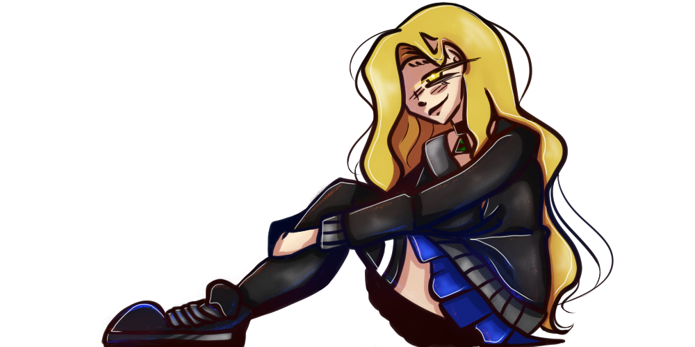

Je suis vraiment désolé pour tout. Je t'aime.
✓ seen
✓ seen
Shirley Glendower est, d'apparence, une adolescente de 17 ans comme toute autre qui intègre un nouveau lycée après avoir emmenagé avec son frère ainé. La jeune fille n'a aucun mal à se faire aimer ou à se faire des amis.
Tout semble normal jusqu'au moment où la rencontre d'Ilès, un ancien élève de retour au lycée, ne boulverse totalement sa vie paisible. Shirley va devoir de nouveau poser son regard sur ses visions qui la torturent et qu'elle croyait enfouie à jamais dans son passé.
Et vous, arriverez-vous à les voir ?
